弓道の心
射法について
弓矢で射を行う場合の射術の基本ルール。
射法とは、弓を引く初めの一歩
-
弓道を修練する場合は基準であり、法則である射法を十分に理解することが必要です。
射法八節
射法の一連動作
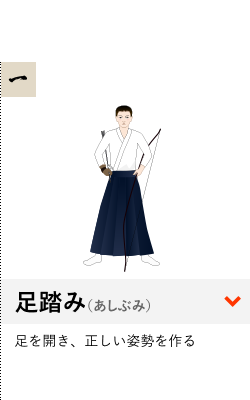
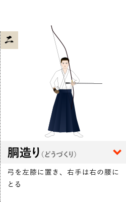
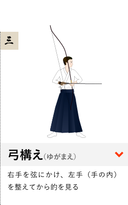
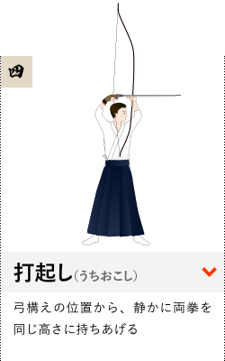
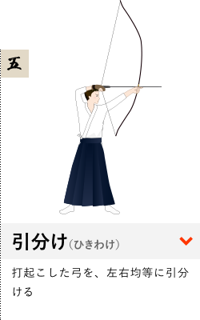
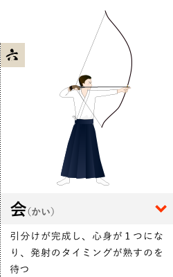
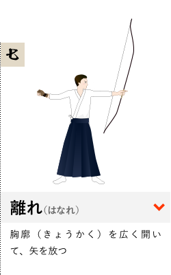
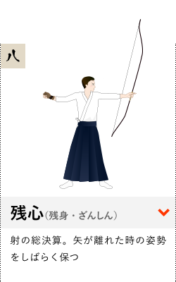
８つの動作は区分されていますが、終始関連して一つの流れを作り、動作と動作の間が分離・断絶してはなりません。一射を一本の竹に例えると、竹に８つの節（ふし）があるのと同じこと。つまり、８つの節は相互に関連する一本の竹でありながら、一節（ひとふし）ごとに異なった8つの節であることを意識することが大切なのです。
「射法八節」の1番動作「足踏み」の前に
-
足の広さは基準があり、それを決めるために、まず、自分の矢束（やづか：矢の長さ）を決めないと、８つの動きは始まりません。
矢束（やづか）の定め方
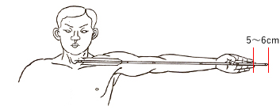
矢束は各人の腕の長さによつて定まる。
（安全のため5～6cmの長さを加える。）
足の踏み方
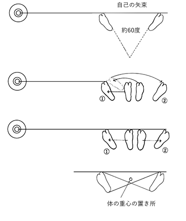
＊矢束を基準に、両足を約60度に開くのが、基準形
(1)一足で踏み開く場合
的を見ながら左足を的の中心に向かって半歩踏み開き、次に右足を一度左足に引きつけ、右へ一足で扇形に踏み開きますが、この時、足もとを見てはいけません。
(2)二足で踏み開く場合
的を見ながら左足を的の中心に向かって半歩踏み開き、次に目を下に移して、右足を反対に半歩踏開きます。
射法八節 解説
-
足踏み（あしぶみ）
足を開き、正しい姿勢を作ります。
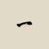
矢束（やづか）を標準に、外八文字（約60度）に踏み開き、両方の親指の先を的の中心と一直線上になるように構えます。＊末弭（うらはず：弦をかける弓の上部）は床上約10cmに留めます
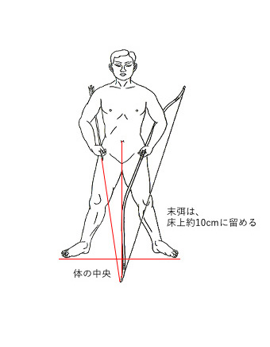
-
胴造り（どうづくり）
弓を左膝に置き、右手は右の腰にとります。
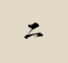
シンプルに見えて、射の基本となる重要な動作です。重心を体の中心に置き、弦調べと箆調べ（つるしらべ、と、のしらべ）で弦の位置と矢の方向を調べ、息を整えます。
＊目は鼻頭に
＊心気を丹田におさめる
＊肩、腰横の線を足踏の線と平行に重ねる
＊本弭を左の膝頭の上に置く
＊膕（ひかがみ：膝の後ろ）を伸ばす
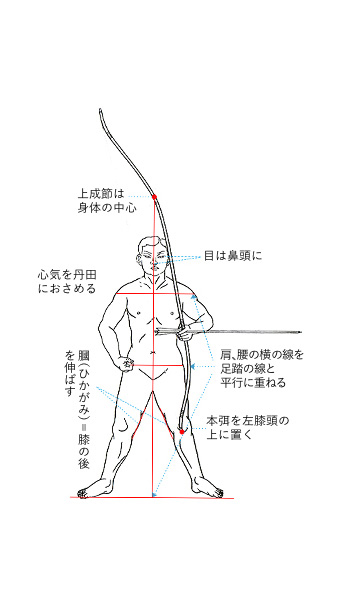
-
弓構え（ゆがまえ）
右手を弦にかけ、左手（手の内）を整えてから的を見ます。
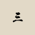
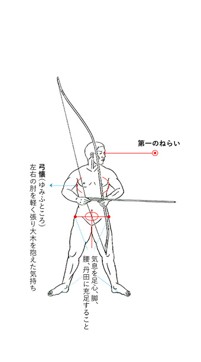
第一のねらい
鼻筋にて的を二つに割り、右の目と的の中心に一線をひくねらいの線。
物見を定める
両眼は己の鼻筋を通し、的の中心を静かに映し、気息を統一して他に散らさず弓倒しに至る目でまばたきをしない。
弓懐（ゆみふところ）
左右の肘を軽く張り、大木を抱えた気持ち。
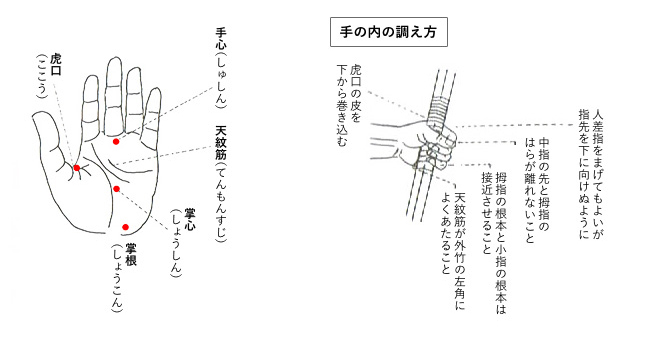
-
打起し（うちおこし）
3の弓構えの位置から、そのまま静かに両拳を同じ高さに持ちあげます。
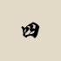
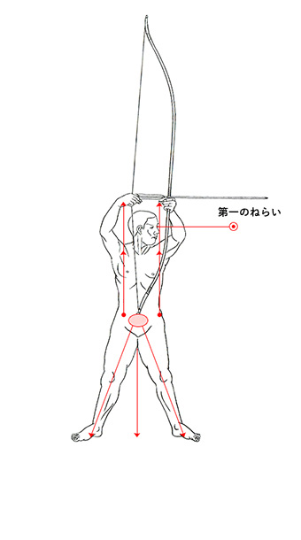
掬い挙げる気持ちにて両拳を軽く挙げる。
高さは額（ひたい）の線よりやや上がよい。
肩にひびかないところ。
気合を足心、腰、丹田におき、胸や肩に力を入れないこと。
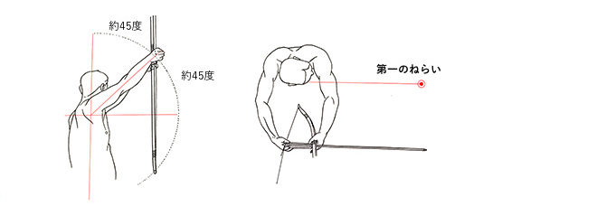
-
引分け（ひきわけ）
4で打起こした弓を、左右均等に引分けます。
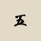
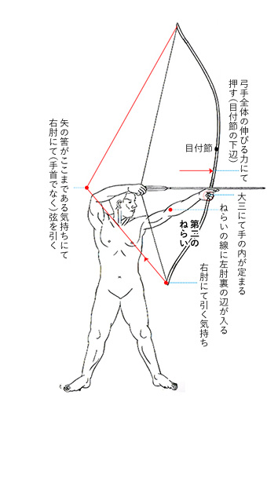
肘力、大三（押大目引三分一）をとり、左右均等に引分け会に到らしむ。
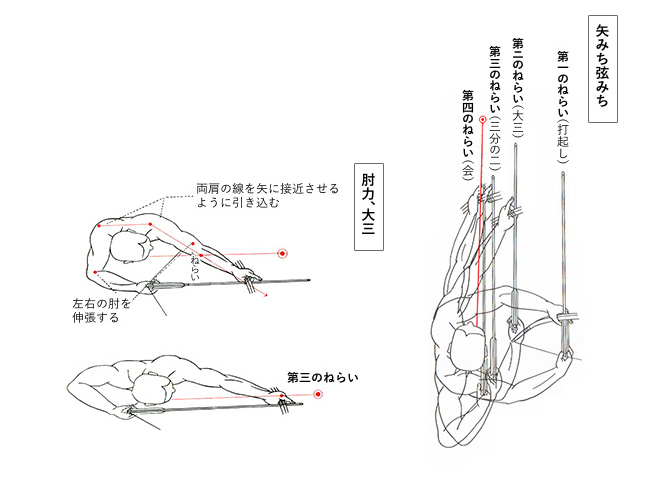
-
会（かい）
5の引分けが完成し、心身が１つになり、発射のタイミングが熟すのを待ちます。呼吸を詰めず、お腹の力が八分九分に満ちるのを待ちます。
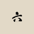
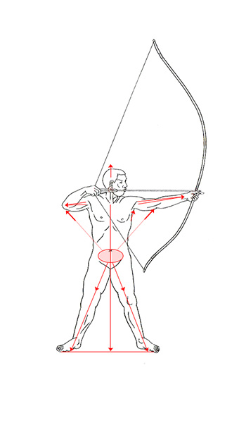
肘力、大三（押大目引三分一）をとり、左右均等に引分け会に到らしむ。
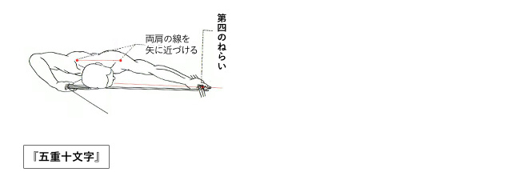
-
離れ（はなれ）
胸廓（きょうかく）を広く開いて、矢を放ちます。
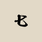
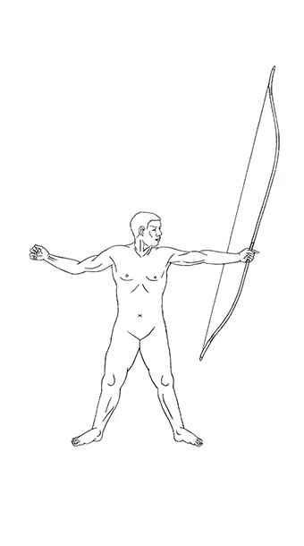
上下左右に力が十分伸び合い、気力が丹田（たんでん＝お腹）に八分から九分満ちた時に、気合の発動で矢を放ちます。
-
残心（残身）（ざんしん）
射の総決算。矢が離れた時の姿勢をしばらく保ちます。
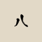
矢を発しても姿勢を変えず、矢所（やどころ：矢が当たった所）を見ます。
そのまま気合を抜かず、弓倒し（ゆだおし）をします。
残身（心）は、射の総決算である縦横十文字の規準を保つことが大切。
呼吸に合わせ、両拳を腰にとり、物見（ものみ：的を見る動作）を静かに正面に戻します。